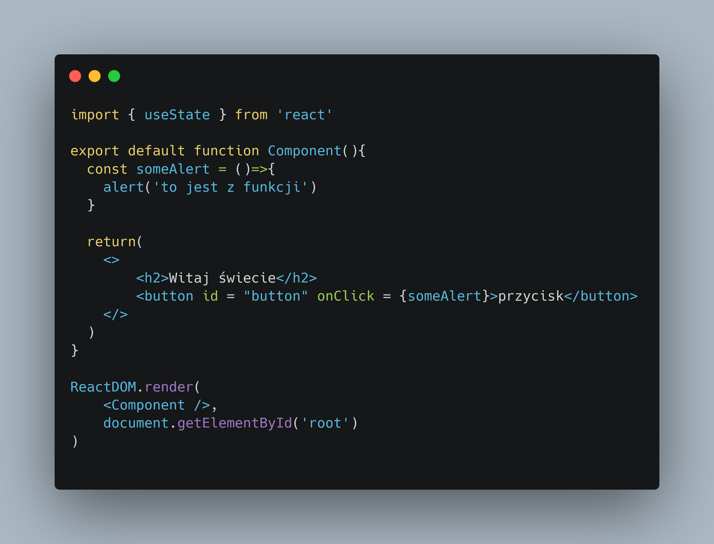
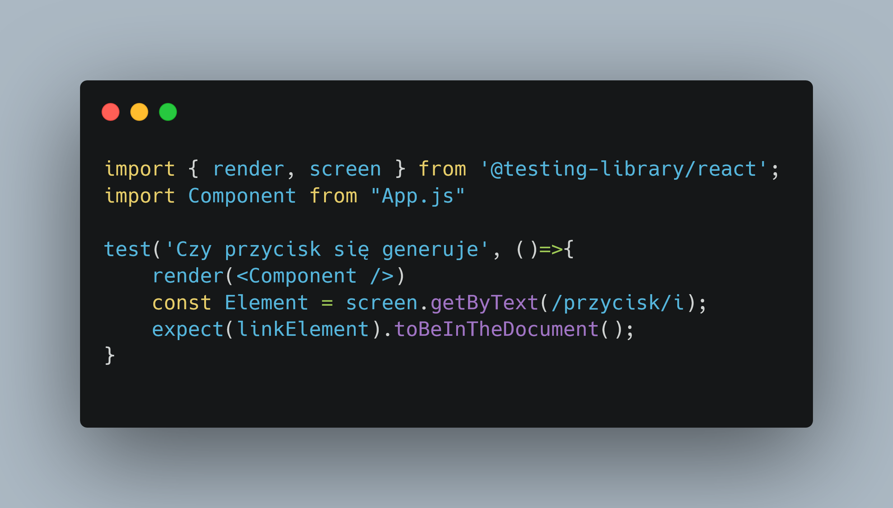
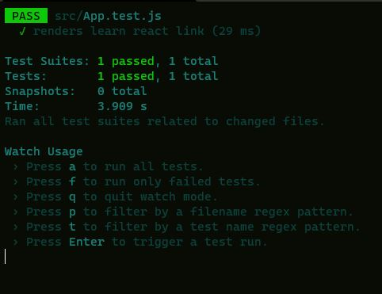

Testowanie Kodu Reacta
TDD już dawno zdominowało tworzenie oprogramwanie
Ten dziwny skrót to porpostu oznaczenie metody tworzenia oprogramowania,
w którym najpierw piszemy kod, później testy
To jest komponent który będziemy testowali

Tak wygląda kod testu sprawdzający czy przycisk się dobrze renderuje

Jeżeli szystko się udało, w konsoli po wywołaniu npm test lub yarn test powinno się pojawić coś w rodzaju
